Programming in Python and Deep Learning
Forecasting with Machine Learning
Natasia Villadsen
2026-11-04
Introduction
Today
Brains and history
From biological neurons to the renaissance of neural networks
Anatomy of a network
Layers, activations, and the forecast
Training
Objective, optimization, backpropagation
Regularization
Dropout, penalties, and early stopping
Implementation
The PyTorch pipeline, from data to evaluation
Beyond feed-forward neural networks
CNNs, LSTMs, and Transformers
Why PyTorch?
PyTorch is the deep learning framework of this course
40.5% vs. 34.7% Job postings (PyTorch vs. TF)
248,163 vs. 17,342 Hugging Face models (PyTorch vs. TF)
86.2M vs. 16.7M PyPI downloads (PyTorch vs. TF), (Aug 2026)
Sources: Huntr (Jul 2026); Second Talent (2026)
- Tutorials
PyTorch is the framework of instruction, but you are free to use TensorFlow
Neural Networks are Inspired by Brains
A Neural Network of the Brain of a Mouse I
Extract from 1 mm³ of Mouse Brain

Source: MICrONS Explorer Render, Daniel Berger & MICrONS Explorer Consortium Team. Google Research and Harvard University.
A Neural Network of the Brain of a Mouse II
Extract from 1 mm³ of Mouse Brain — Closer Look

Source: MICrONS Explorer Render, Daniel Berger & MICrONS Explorer Consortium Team. Google Research and Harvard University.
A Neural Network of the Brain of a Mouse III
Extract from 1 mm³ of Mouse Brain — Even Closer Look

Source: MICrONS Explorer Render, Daniel Berger & MICrONS Explorer Consortium Team. Google Research and Harvard University.
A Neuron I
A Biological Neuron
A Neuron II
Artificial Analogue to Neuron
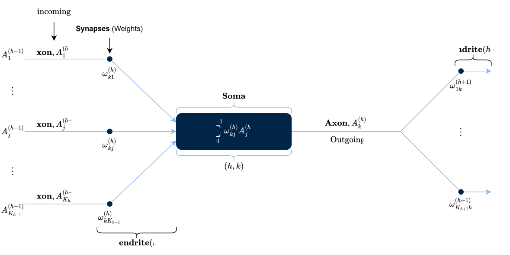
The Neurological Network
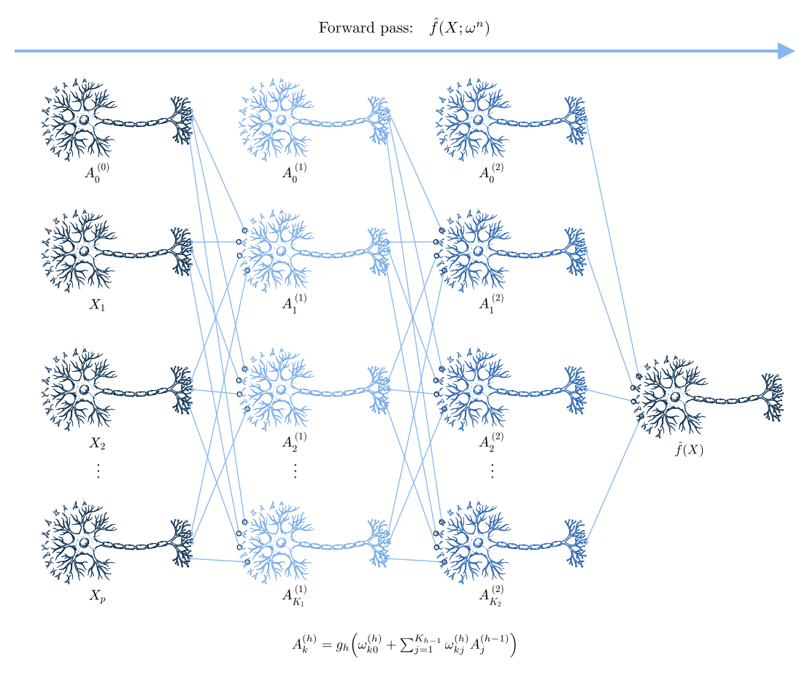
The Artificial Network
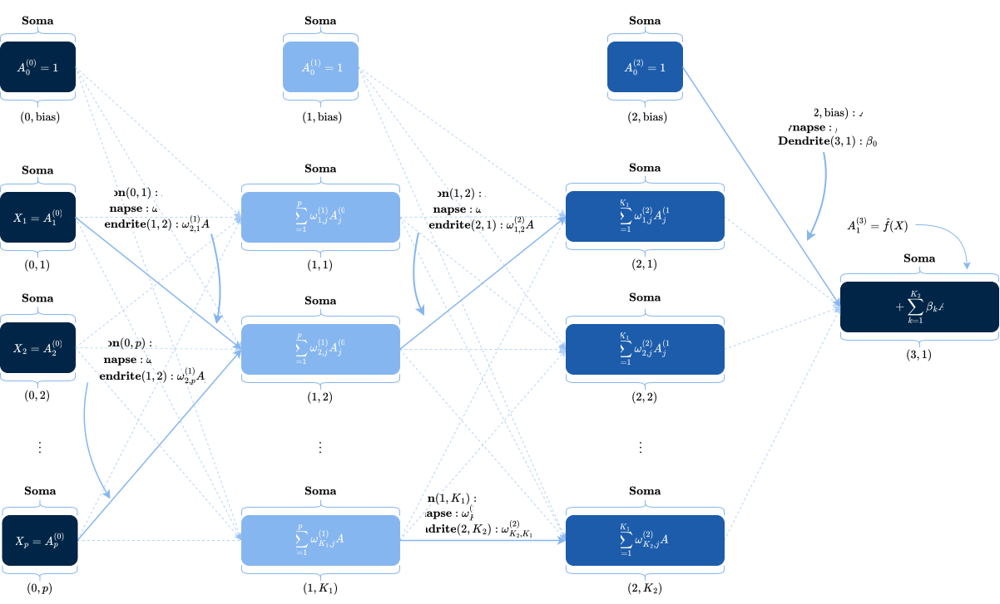
Neural Networks are Supported by…
Computational Power Exponentially growing computing power, GPUs
Backpropagation Efficient gradient computation for deep networks
Pre-trained Models Including custom tuning
Frameworks PyTorch, TensorFlow, and similar
Next challenge: Physical limits of silicon-based chips reached.
Possible solution: quantum computing
Neural Networks
Forecasting US Inflation: Benchmarks vs. a Neural Network
US quarterly inflation, test sample (last 15% of quarters)
| Forecast | Test MSE | |
|---|---|---|
| Random walk | 13.8971 | |
| OLS | 9.9284 | |
| LASSO | 9.5005 | |
| Ridge | 9.5995 | |
| Random forest | 9.9475 | |
| Feedforward neural network - basic | 10.8601 | |
Today: how do we construct and train this network?
A Neural Network
A Neural Network
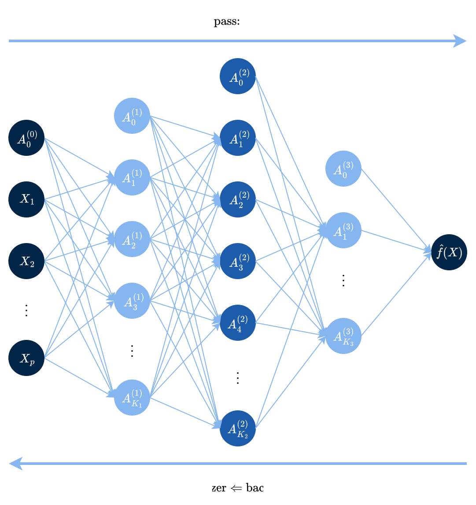
The Layers of a Neural Network
Layers are indexed by \(h\), \(h = 0, \ldots, H+1\). There are \(K_h\) neurons in each layer \(h\), with activations \(A_k^{(h)}\)
One input layer
\(h = 0\)
The neurons are the \(p\) input features, \(\mathbf{X} = (X_1, X_2, \ldots, X_p)\)
\(A_j^{(0)} = X_j\), \(\quad j = 1,\ldots,p\)
\(H\) hidden layers
\(h = 1, \ldots, H\)
Essential computations here
One output layer
\(h = H+1\)
Produces the forecast
The Hidden Layers
The essential computations occur in the hidden layers (\(h = 1,...,H\)), with activations \(A_k^{(h)}\), weights \(\omega_{kj}^{(h)}\), biases \(\omega_{k0}^{(h)}\), and activation functions \(g_h\),
\[A_k^{(h)} = g_h\left(\omega_{k0}^{(h)}+\sum_{j=1}^{K_{h-1}}\omega_{kj}^{(h)}A_j^{(h-1)}\right), \qquad k = 1,...,K_h\]
Weighted sum
Weights times the activations of the previous layer
Activation function
\(g_h\) introduces non-linearity to layer \(h\)
The First Hidden Layer
The first hidden layer is a special case, with \(K_0 = p\) and \(A_j^{(0)} = X_j\),
\[A_k^{(1)} = g_1\left(\omega_{k0}^{(1)}+\sum_{j=1}^{p}\omega_{kj}^{(1)}X_j\right), \qquad k = 1,...,K_1\]
Forecasts
In the regression task, the output layer (\(h = H+1\)) produces forecasts, with weights \(\beta_k\) and intercept \(\beta_0\), \[f(\mathbf{X}) = \beta_0 + \sum_{k = 1}^{K_H}\beta_k A_k^{(H)}\]
Evaluating in the activations of the last hidden layer,
\[f(\mathbf{X}) = \beta_0 + \sum_{k = 1}^{K_H}\beta_k\, g_H\left(\omega_{k0}^{(H)}+\sum_{j=1}^{K_{H-1}}\omega_{kj}^{(H)}A_j^{(H-1)}\right)\]
Similarity to Neurons Revisited
Artificial Analogue to Neuron
Implementation
The Blueprint
1
Data
Target variable and predictors
2
Split and scale
Chronological training, validation and test split, standardization fitted on the training sample only
3
DataLoaders
Tensors in mini-batches
4
Model
An nn.Module defining the architecture
5
Ingredients
Objective, optimizer, regularization, loss
6
Training loop
Training and validation over epochs
7
Evaluation
Out-of-sample accuracy measures on the test sample
Preliminaries
Importing libraries and selecting device
Empirical Data
US quarterly macro data 1959Q1-2009Q3 (no missing values).
Lagging features: inflation, unemployment and the T-bill rate at time \(t\) are used to predict inflation at time \(t+1\),
Temporally Conscious Data Splitting
Chronological split (shuffle=False) to preserve temporal order (split: 70:15:15)
Train (70%)
Validation (15%)
Test (15%)
Standardization
Standardization, fitting on the training sample only,
Tensors
NumPy array
torch.Tensor
TensorDataset
DataLoader
The input data is converted to the format that PyTorch expects/receives,
Constructing DataLoaders
This is incredibly efficient for large or specialized datasets,
The Simple Neural Network I
Parameters are passed after self (here n_in, n_hidden1 and n_hidden2)
The Simple Neural Network II
PyTorch neural networks are defined as subclasses of nn.Module
Input n_in features
fc1 + ReLU n_hidden1 neurons
fc2 + ReLU n_hidden2 neurons
fc3 1 output
n_inis the number of input features,n_hidden1andn_hidden2are the numbers of neurons in the first and second hidden layer- The network on the previous slide has two hidden layers
Non-Linear Activation Functions
Introduce non-linearity, allowing the model to learn complex patterns
| Function | Map | Definition |
|---|---|---|
| ReLU (Rectified Linear Unit) most prevalent today |
\(f: \mathbb{R} \to [0, \infty)\) | \(f(x) = \max\{0, x\}\) |
| tanh (hyperbolic tangent) | \(\text{tanh}: \mathbb{R} \to (-1, 1)\) | \(\text{tanh}(x) = \dfrac{e^x - e^{-x}}{e^x + e^{-x}}\) |
| sigmoid | \(\sigma: \mathbb{R} \to (0, 1)\) | \(\sigma(x) = \dfrac{1}{1 + e^{-x}}\) |
Sigmoid: The first activation function
\(\sigma(x) \approx 0\): the neuron does not fire
\(\sigma(x) \approx 1\): the neuron fires \(\Rightarrow\) the neuron contributes to the output of the network
Activation Functions and Their Derivatives
ReLU, tanh and Sigmoid with Their Derivatives
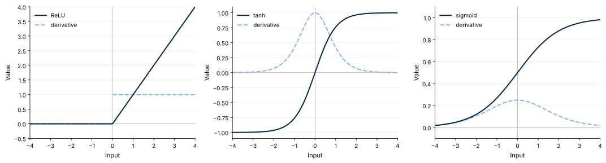
ReLU: \(g'(x) = 0\) for \(x < 0\), \(g'(x) = 1\) for \(x > 0\). tanh: \(g'(x) = 1 - \tanh^2(x)\). sigmoid: \(g'(x) = \sigma(x)(1 - \sigma(x))\).
The derivative \(g'\) enters every backpropagation step (coming up).
Note: the sigmoid derivative is maximized at \(x = 0 \to \sigma'(x) = 0.25\) – risk of vanishing gradients
Specifying the Activation Function
Specifying the activation function in the forward pass,
Alternatives: torch.tanh(self.fc1(x)), torch.sigmoid(self.fc1(x))
Up to you: Activation Functions
The vanishing gradient problem pertains to the maximum of the sigmoid derivative being 0.25. A product of many such derivatives will with high likelihood approach zero.
Using the derivative functions of the ReLU and sigmoid activation functions, d_sigmoid and d_relu, compute the product of each evaluated at \(x = 1\), ten times (the vector np.full(10, 1.0)).
Training a Neural Network I
xkcd #1838
Source: Randall Munroe, https://xkcd.com/1838/, CC BY-NC 2.5.
Training a Neural Network II
We give this example in the \(h = 1\) case,
\[f(\mathbf{X}) = \beta_0 + \sum_{k = 1}^{K_1} \beta_k A_k^{(1)} = \beta_0 + \sum_{k = 1}^{K_1}\beta_k g_1\left(\omega_{k0}^{(1)}+\sum_{j=1}^p\omega_{kj}^{(1)}X_j \right)\]
The parameters to be estimated are,
Output layer
\(\boldsymbol{\beta} = \beta_0, \beta_1, \ldots, \beta_{K_1}\)
Hidden layer
\(\boldsymbol{\omega}^{(1)} = \omega_{kj}^{(1)}\) for \(k = 1, \ldots, K_1\) and \(j = 0, \ldots, p\)
Stack the parameters into a vector: \(\theta = (\boldsymbol{\beta}, \boldsymbol{\omega}^{(1)})\)
Objective Function
We assume a squared loss function to estimate parameters \(\theta\).
For a single-hidden-layer network (\(H=1\)), the model forecast for observation \(i\) is,
\[ f_\theta(x_i) = \beta_0 + \sum_{k = 1}^{K_1}\beta_k g_1\left(\omega_{k0}^{(1)}+\sum_{j=1}^p\omega_{kj}^{(1)}x_{ij} \right) \]
Vectorising the parameters into \(\theta\), we minimize the objective function \(R(\theta)\):
\[ \min_\theta \{R(\theta)\}, \quad R(\theta) = \frac12\sum_{i = 1}^n(y_i - f_\theta(x_i))^2 \]
Numerical Optimization I
Non-convex and high-dimensional problem no closed form, no analytical solution
Numerical optimization gradient descent is a common algorithm
Too heavy computationally stochastic gradient descent (SGD) is used instead
SGD uses only a small batch of data to compute the gradient
Numerical Optimization II — Gradient Descent
- Given a differentiable function \(f: \mathbb{R}^p\to \mathbb{R}\) to be minimized with respect to the vector \(\mathbf{\theta}\in\mathbb{R}^p\) and step size \(s\),
Initialize with some starting value \(\mathbf{\theta}^\ast_{(0)}\)
Then, for each iteration, \(i\),
Compute the gradient at \(\mathbf{\theta}_{(i)}^\ast\), i.e.,
\[ \nabla f(\mathbf{\theta}_{(i)}^\ast) = \frac{\partial f(\mathbf{\theta})}{\partial \mathbf{\theta}}\Bigg\vert_{\mathbf{\theta} = \mathbf{\theta}_{(i)}^\ast}\]
Set \(\mathbf{\theta}_{(i+1)}^\ast = \mathbf{\theta}_{(i)}^\ast - s\nabla f(\mathbf{\theta}_{(i)}^\ast)\)
Repeat until convergence. A convergence criterion could be a sufficiently small gradient, \(\lVert \nabla f(\theta_{(i)}^\ast)\rVert <\varepsilon\) with a maximal number of iterations at which the algorithm terminates – and reports non-convergence.
Numerical Optimization III — Stochastic Gradient Descent
- Given \(f(\mathbf{\theta}) = \frac{1}{n}\sum_{j=1}^{n} f_j(\mathbf{\theta})\) to be minimized with respect to \(\mathbf{\theta}\in\mathbb{R}^p\) and step sizes \(s_i\),
Initialize with some starting value \(\mathbf{\theta}^\ast_{(0)}\)
Then, for each iteration, \(i\),
Draw an index \(j_i\) uniformly at random from \(\{1,\dots,n\}\) and compute the gradient of that single term at \(\mathbf{\theta}_{(i)}^\ast\), i.e.,
\[ \nabla f_{j_i}(\mathbf{\theta}_{(i)}^\ast) = \frac{\partial f_{j_i}(\mathbf{\theta})}{\partial \mathbf{\theta}}\Bigg\vert_{\mathbf{\theta} = \mathbf{\theta}_{(i)}^\ast}\]
Set \(\mathbf{\theta}_{(i+1)}^\ast = \mathbf{\theta}_{(i)}^\ast - s_i\nabla f_{j_i}(\mathbf{\theta}_{(i)}^\ast)\)
Repeat until convergence
Numerical Optimization IV
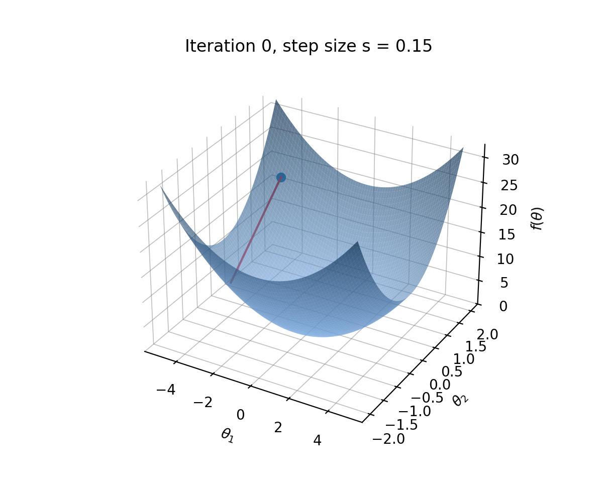
Backpropagation I
The problem
- The numerical optimization, even in the SGD case, has incredibly high computational overhead
- Weights require the chain rule to compute derivatives
The solution
- Backpropagation is a recursive application of the chain rule to compute the gradient of the loss
- Therefore, backpropagation eases the computational burden of training
Each SGD step uses a mini-batch \(B\) of observations (batch_size=32), so backpropagation computes the gradient of the batch-averaged loss rather than of a single \(R_i\).
Backpropagation II
Recall the objective,
\[ R(\theta) = \sum_{i = 1}^n R_i(\theta) = \frac12\sum_{i = 1}^n(y_i - f_\theta(x_i))^2\]
A sum, which means the gradient is a sum over the \(n\) observations, so we need only consider one of these,
\[R_i(\theta) = \frac12\left(y_i - \beta_0- \sum_{k = 1}^{K_1}\beta_k g_1\left(\omega_{k0}+\sum_{j = 1}^p\omega_{kj}x_{ij}\right)\right)^2\]
Backpropagation III
Let \(z_{ik} = \omega_{k0} + \sum_{j = 1}^p\omega_{kj}x_{ij}\Rightarrow f_\theta(x_i) = \beta_0 + \sum_{k = 1}^{K_1}\beta_k g_1(z_{ik})\). Update \(\beta_k\) in one training step,
Forward pass: compute the forecast and the loss
\(\beta_k\)
\(f_\theta(x_i)\)
\(R_i(\theta)\)
Backward pass: multiply the derivatives (chain rule)
\(\dfrac{\partial f_\theta(x_i)}{\partial \beta_k} = g_1(z_{ik})\)
\(\dfrac{\partial R_i(\theta)}{\partial f_\theta(x_i)} = -(y_i - f_\theta(x_i))\)
Computing the derivative w.r.t. \(\beta_k\),
\[ \begin{aligned} \frac{\partial R_i(\theta)}{\partial \beta_k} &= \frac{\partial R_i(\theta)}{\partial f_\theta(x_i)} \cdot \frac{\partial f_\theta(x_i)}{\partial \beta_k} \\ &= -(y_i - f_\theta(x_i)) \cdot g_1(z_{ik}) \end{aligned} \]
Backpropagation IV
Let \(z_{ik} = \omega_{k0} + \sum_{j = 1}^p\omega_{kj}x_{ij}\). Update \(\omega_{kj}\) in one training step,
Forward pass: compute the forecast and the loss
\(\omega_{kj}\)
\(z_{ik}\)
\(g_1(z_{ik})\)
\(f_\theta(x_i)\)
\(R_i(\theta)\)
Backward pass: multiply the derivatives (chain rule)
\(\dfrac{\partial z_{ik}}{\partial \omega_{kj}} = x_{ij}\)
\(\dfrac{\partial g_1(z_{ik})}{\partial z_{ik}} = g'_1(z_{ik})\)
\(\dfrac{\partial f_\theta(x_i)}{\partial g_1(z_{ik})} = \beta_k\)
\(\dfrac{\partial R_i(\theta)}{\partial f_\theta(x_i)} = -(y_i - f_\theta(x_i))\)
Computing the derivative w.r.t. \(\omega_{kj}\),
\[ \begin{aligned} \frac{\partial R_i(\theta)}{\partial \omega_{kj}} &= \frac{\partial R_i(\theta)}{\partial f_\theta(x_i)} \cdot \frac{\partial f_\theta(x_i)}{\partial g_1(z_{ik})} \cdot \frac{\partial g_1(z_{ik})}{\partial z_{ik}} \cdot \frac{\partial z_{ik}}{\partial \omega_{kj}} \\ &= -(y_i - f_\theta(x_i)) \cdot \beta_k \cdot g'_1(z_{ik}) \cdot x_{ij} \end{aligned} \]
Backpropagation V: Update Rules
The two derivatives form the basis for the update rules, with step size \(s\) and one observation \(i\) per step
Output weight
\[ \begin{aligned} \beta_k^{(t + 1)} &= \beta_k^{(t)} - s\,\frac{\partial R_i}{\partial \beta_k} \\ &= \beta_k^{(t)} + s\,(y_i - f_\theta(x_i))\,g_1(z_{ik}) \end{aligned} \]
Hidden weight
\[ \begin{aligned} \omega_{kj}^{(t + 1)} &= \omega_{kj}^{(t)} - s\,\frac{\partial R_i}{\partial \omega_{kj}} \\ &= \omega_{kj}^{(t)} + s\,(y_i - f_\theta(x_i))\,\beta_k\,g'(z_{ik})\,x_{ij} \end{aligned} \]
- Both updates contain the forecast error \((y_i - f_\theta(x_i))\)
- This error term is attributed to the parameters via the terms \(g(z_{ik})\) and \(\beta_k g'(z_{ik}) x_{ij}\)
Optimization Algorithms
Stochastic Gradient Descent is rarely used in practice today
Building block
RMSProp
Uses smaller steps for parameters with large recent gradients
Building block
Momentum
Averages past gradients to smooth noise and speed up
Commonly preferred
ADAM
A combination of RMSProp and momentum (Kingma & Ba, 2014)
Specifying the Optimizer
Common alternatives: torch.optim.SGD, torch.optim.RMSprop, torch.optim.AdamW
lr=0.001is default for thetorch.optim.Adamfunction.modelis a name we specify for the neural network object, e.g.,model = NN(n_in=3)
Guards Against Overfitting
Dropout
Randomly sets neurons to zero in each training step
\(\ell_1\) regularization
Penalizes the absolute value of the weights, favouring sparse networks
\(\ell_2\) regularization (weight decay)
Shrinks the weights towards zero
Early stopping
Stops training when the validation loss no longer improves
Dropout
- Dropout (Srivastava et al., 2014):
nn.Dropout(p)is applied in every training step - Each neuron in the layer is set to zero with probability \(p\), e.g., \(p = 0.5\)
- Neurons are made more independent, so the network behaves like an average of many thinned networks (think bagged trees)
- Dropout is not applied in evaluation
Neural Network with Dropout = 0.5
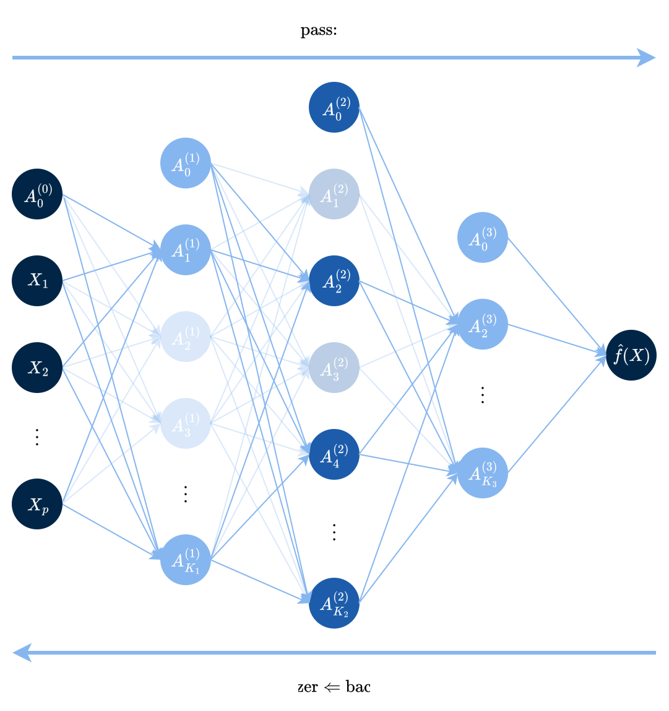
Dropout in PyTorch
Applying dropout to layer fc1 with specified probability p=0.5
↑Basic NN10.235
\(\ell_1\) and \(\ell_2\) Regularization
\(\ell_1\): absolute value
Penalizes the absolute value of the weights, favouring sparse networks, with penalty added to the loss,
\[\mathcal{L}(\omega) + \lambda\sum_{h,k,j}\left|\omega_{kj}^{(h)}\right|\]
\(\ell_2\): weight decay
Weight decay (\(\ell_2\)) adds a penalty to the loss, shrinking the weights towards zero,
\[\mathcal{L}(\omega) + \frac{\lambda}{2}\sum_{h,k,j}\left(\omega_{kj}^{(h)}\right)^2\]
\(\ell_1\) Regularization in PyTorch
↑Basic NN10.154
\(\ell_2\) Regularization in PyTorch
Weight decay is passed as an argument to the optimizer, e.g., weight_decay=1e-4 in Adam,
↑Basic NN10.150
Up to you: Penalties
Compute \(\sum |\omega|\) (the \(\ell_1\) term) and \(\sum \omega^2\) (the \(\ell_2\) term) for the weights \(\omega = (0.5, -1, 2)\).
Epochs
An epoch is a complete pass through the entire training dataset
The training process is iterative and involves multiple epochs. The number of epochs can be 1) prespecified, 2) tuned, or 3) determined by early stopping
Early Stopping I
Early Stopping
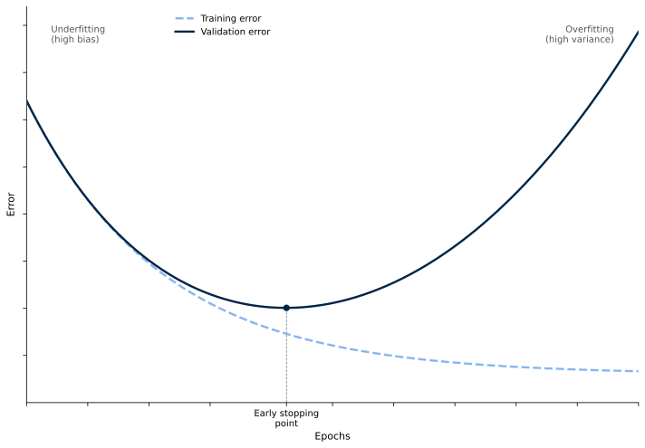
Early Stopping II
When the training accuracy keeps increasing, we continue training
The validation accuracy, our ability to generalize, starts to decrease after a certain point
No improvement for #patience epochs: stop and restore the best model state
Early stopping adds a few lines to the training loop. Refer to Lecture 4 Exercises
↑Basic NN10.659
Loss Functions
We still consider only the regression task. Typical loss functions include,
nn.MSELoss
Squared error
nn.L1Loss
Absolute error
nn.HuberLoss
Squared for small errors, absolute for large (Huber, 1964) – remember for later
Example for the mean squared error,
We can write our own loss functions, but this is up to you if you wish to do so.
Training in PyTorch
Initializing Training
- The model is initialized and moved to the appropriate device (CPU or GPU)
- The loss function and optimizer are specified
- The number of epochs is set to 20
One Training Step
1. optimizer.zero_grad()
Reset the gradients
2. model(inputs)
Forward pass: compute the forecasts
3. criterion(outputs, targets)
Compute the loss
4. loss.backward()
Backpropagation: compute the gradients
5. optimizer.step()
Update the parameters
Main Training and Validation Loop II
One Validation Step
1. model.eval()
Switches to evaluation mode (leaving out dropout, batch normalization, etc.)
2. torch.no_grad()
Disables gradient computations
3. model(inputs), criterion(outputs, targets)
Computes forecasts and loss
4. val_loss += loss.item() * inputs.size(0)
Adds the batch’s summed loss to val_loss
5. val_loss /= len(lVal.dataset)
Divides val_loss by the number of validation observations to get the validation MSE
One Evaluation Pass
1. model.eval() and torch.no_grad()
Switches to evaluation mode (leaving out dropout, batch normalization, etc.) and disables gradient computation
2. model(inputs) over lTest
Computes the forecasts for the test sample
3. y_scaler.inverse_transform
Transforms the forecasts and the ground truth back to the original scale
4. Test MSE
Computes the mean squared error
5. OOS \(R^2\) vs. training mean
Computes the out-of-sample \(R^2\) relative to the training-mean forecast
Model Evaluation
An Extended Pipeline (My Preferred Approach)
Reproducible
I set the seed for reproducibility
Tracked
I store the training and validation losses, time the run, and keep running loss book-keeping for each epoch to keep track of the training process
Monitored
I print these losses at the end of each epoch to monitor convergence
Limitations of Neural Networks
Jagged Intelligence
Models have incredible power, yet struggle with tasks like telling time (Stanford 2026 AI Index Report)
Black Box
Models are not interpretable with potentially harmful consequences
Data Hungry
Models require large amounts of data to train effectively, which may not be available in all domains
Computational overhead
Frequently requires GPUs, high memory, and long compute times
Beyond Feed-Forward Neural Networks
Broader Applications of Deep Learning
Computer vision
Convolutional Neural Networks
Time series modelling
Recurrent Neural Networks, LSTMs, Transformers
Natural language processing
Transformers (!) \(\to\) Large Language Models
Example: Computer vision for health care
Convolutional Neural Networks (CNNs)
- Developed for computer vision tasks (LeCun et al., 1998)
- The classic deep learning architecture for image recognition and classification
- Pipeline consists of convolutional and pooling operations
Image
Convolution
Activation
Pooling
Prediction
A Convolutional Neural Network Visualized
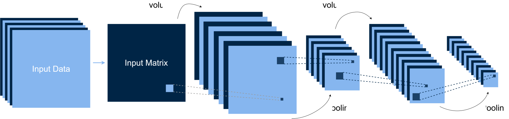
The Convolutional Operation
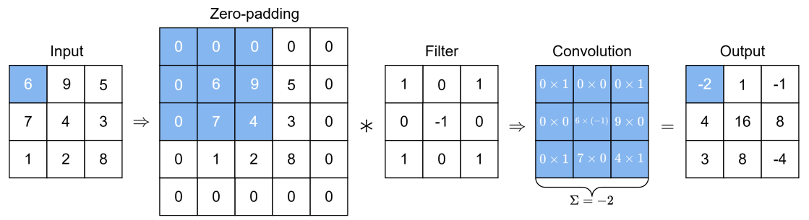
Applying Activations and Pooling
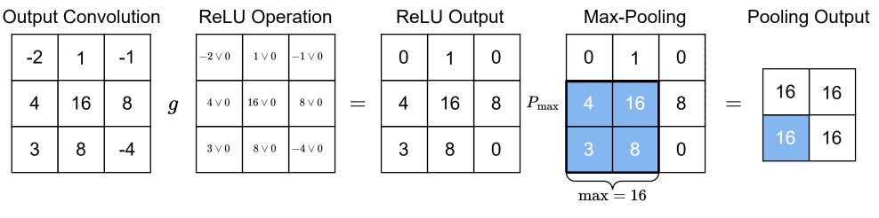
Forecasting from Images of Price Charts
Jiang, Kelly and Xiu (2023) turn the recent price history of stocks into images, then use a 2D CNN to forecast the direction of future returns
Input
A black-and-white image of the open-high-low-close bars, a moving average and volume bars of the last 5, 20 or 60 days.
Each day is 3 pixels wide
Model
A 2D CNN architecture with convolution, batch normalization, leaky ReLU and max-pooling.
A fully connected layer with dropout and sigmoid activation produces the forecast
Forecast
The probability that the subsequent return is positive
All stocks on NYSE, AMEX and NASDAQ
A Stylized Version: Shapes
The input has shape (batch, channels, height, width). A 20-day chart is 60 pixels wide, and we let \(H\) denote its height
Input: Dimension (batch, 1, H, 60)
channels = 1 \(\to\) black and white image
Block 1: Conv2d(1, 64, 3)
Components: Convolution, batch normalization, leaky ReLU, and max-pooling. MaxPool2d(2): height and width are halved
Blocks 2 and 3: Conv2d(64, 128, 3) and Conv2d(128, 256, 3)
Components: Convolution, batch normalization, leaky ReLU, and max-pooling. 64 to 128 and 128 to 256 channels, each halving height and width
flatten(1) and dropout
(batch, 256 * H/8 * 60/8), rounded down at each pooling. Division by 8 because MaxPool2d(2) is applied three times
torch.sigmoid(Linear(n_flat, 1))
(batch, 1): one number, the probability of an up move
A Building Block (Helper)
Criterion is the binary cross-entropy loss, the loss function for a binary (yes/no) outcome,
The Network
256 is c_out from block 3, and \(H/8 = 8\) and \(60/8 = 7\) if the input height is \(H = 64\).
Recurrent Neural Networks (RNNs) and LSTMs
Feedforward neural networks (FNNs)
- Input: variables from \(t-1\) (time series forecasting)
- Forecast: target in \(t\)
- No notion of order or history
Recurrent neural networks (RNNs)
- Designed for sequential data, where the output at time \(t\) depends on previous inputs and outputs
- Sequential data common in time series and natural language processing
Long short-term memory networks (LSTMs)
- A type of RNN that can learn long-term dependencies
- Before 2017 (the transformer revolution, in a few slides), Google Translate used LSTMs
- Twin network: The GRU (Gated Recurrent Unit)
Forecasting Inflation from a Window of Quarters
Feedforward network (so far)
- Input: the three variables of one quarter
- Forecast: inflation in the next quarter
Recurrent network
- Input: the last 8 quarters of inflation, unemployment and the T-bill rate, in order
- Forecast: inflation in the next quarter
- The path matters, e.g., whether inflation is rising or falling
Recurrent Neural Networks Visualized
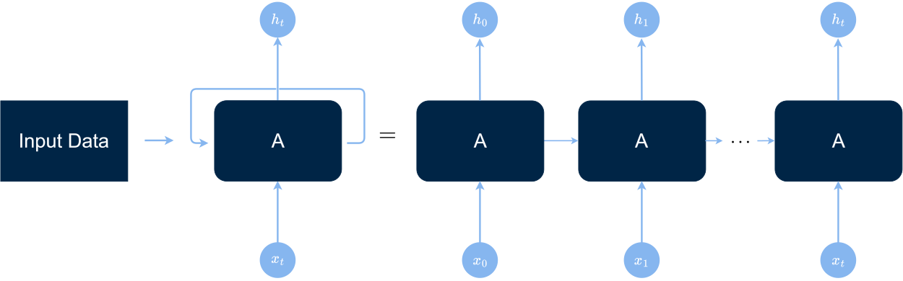
LSTM Unit Visualized
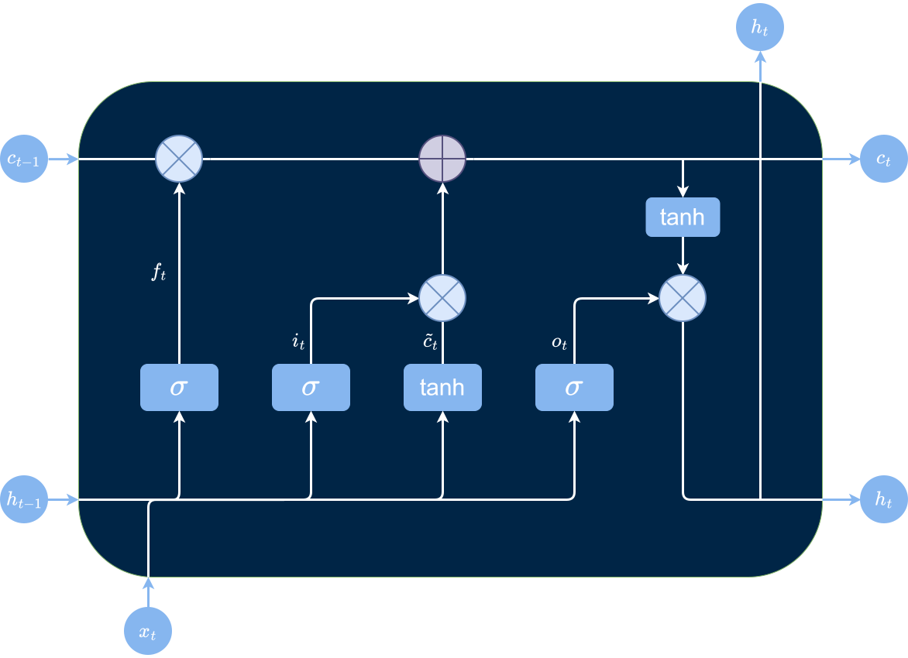
Windows of Quarters, Example
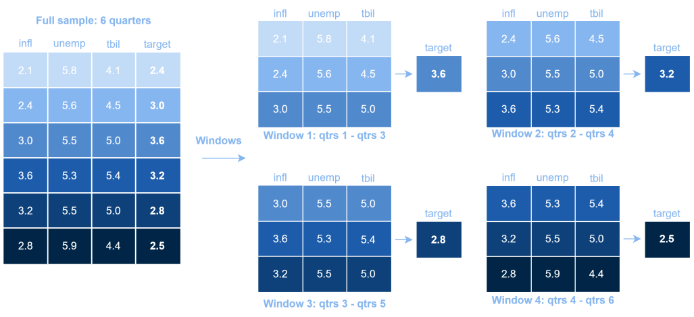
Windows have shape (samples, quarters, variables) = (4, 4, 3)
Target has shape (samples, 1) = (4, 1)
Setting up Windows I
windows has shape (samples, quarters, variables), and each window belongs to the sample in which it ends.
Setting up Windows II
The Recurrent Idea
A recurrent network reads the window one quarter at a time, and keeps a memory of what it has seen: the hidden state
Quarter 1 memory updated
Quarters 2 through 7 memory updated
Quarter 8 forecast from the memory
- The same weights are used for every quarter
- The forecast is made from the memory after the last quarter
- The memory is the distinguishing characteristic of recurrent networks, LSTMs in particular
A Recurrent Network in PyTorch
qrts indicates the number of quarters (in this case) in a window
The LSTM Cell
The LSTM keeps a long-term memory next to the hidden state. Three gates decide what happens. Each gate is a number between 0 (closed) and 1 (open)
Forget gate
How much of the old memory is kept. Is last year’s inflation spike still relevant?
Input gate
How much of the new information is written to the memory. Is this quarter’s jump in unemployment worth remembering?
Output gate
How much of the memory is shown to the forecast. Which parts matter for next quarter?
A plain RNN overwrites its memory in every quarter, so early quarters fade. The gates let the LSTM hold on to information for longer \(\to\) long-memory modeling feasible
↑Basic NNRNN 11.174LSTM 10.717
The Transformer Revolution
Transformers (Vaswani et al., 2017) are the foundation of Large Language Models (LLMs)
Self-attention
Transformers use self-attention mechanisms to process sequential data in parallel, allowing for better scalability and performance
Attention
A mechanism that allows the model to focus on relevant parts of the input sequence when making predictions
Tip
The best intuitive introduction by far, in my opinion, is Section “The Transformer Architecture”, Chapter 15 of Deep Learning with Python (Chollet, 3rd edition, 2025).
Skip the code (which is geared towards TensorFlow) and focus on the intuition
Attention: The Idea
We stay with our inflation forecasting example.
An LSTM squeezes the window into one memory. Attention lets the forecast look at every quarter directly and decide how much each one matters.
Query: \(\mathbf{Q}\)
What information is this quarter looking for?
Key: \(\mathbf{K}\)
What information does each quarter offer?
Value: \(\mathbf{V}\)
Information passed on
\[\text{Attention}(\mathbf{Q}, \mathbf{K}, \mathbf{V}) = \text{softmax}\left(\frac{\mathbf{Q}\mathbf{K}^\intercal}{\sqrt{d}}\right)\mathbf{V}\]
Attention as a Lookup
Intuitively, attention works like a lookup/search engine:
| Search engine | Attention | |
|---|---|---|
| Search term | \(\Leftrightarrow\) | Query, \(\mathbf{Q}\) |
| Tags on the stored items | \(\Leftrightarrow\) | Key, \(\mathbf{K}\) |
| The stored items | \(\Leftrightarrow\) | Value, \(\mathbf{V}\) |
| Items returned, best match first | \(\Leftrightarrow\) | Weighted average of the values |
- Here, stored items are the quarters of the window, and the search is run once every quarter
- The better the match, the larger the weight
- Weights are learned via backpropagation
A Self-Attention Network I
Self-attention: query, key and value all come from the same window. The forecast is made from the output of the last quarter
A Self-Attention Network II
Attention treats the window as a set, so self.pos tells the network the order of the quarters
↑Basic NN12.853
From Attention to a Transformer
Attention only recombines the quarters. We still need non-linear activations.
A Transformer block (Vaswani et al., 2017) adds them, and blocks are stacked:
Self-attention information is mixed across quarters
Add and normalize residual connection and layer norm
Feedforward network two dense layers with ReLU, applied to each quarter
Add and normalize residual connection and layer norm
Three more ingredients
Multi-head
Several attention heads in parallel, so different patterns can be uncovered
Positions
Attention is blind to order, so a position vector is added to each quarter (self.pos in the code)
Causal mask
A quarter may only attend to itself and earlier quarters \(\to\) no look-ahead bias
LLMs and Generative AI
An LLM is a very large transformer with causal attention, trained to predict the next token. GPTs like e.g., ChatGPT abbreviates “Generative Pre-trained Transformer”
G Generative (AI) Produces new text one word at a time: predict, append, repeat (next slide)
P Pre-trained Trained on large corpora of text data to learn the statistical properties of language, by predicting the next word
T Transformers Stacked attention blocks with a causal mask, as on the previous slides
LLMs are Forecasting Models
When we chat with generative AI, the model forecasts the next word given all previous words, and we sample from this probability distribution,
Prompt: “The central bank decided to raise the …”
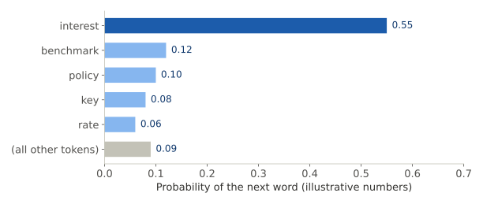
The sampled word is appended and the model forecasts again: a recursive multi-step forecast
The replies we receive are nothing but (incredibly good) predictions
Recent Deep Learning Breakthroughs
Hardware
Training the Chinese LLM LongCat-2.0 Model without NVIDIA GPUs (Reuters, 2026)
Computer vision meets music
MuSViT reads sheet music like computer vision models read images (Penarrubia et al., 2026)
Mathematics
OpenAI and Anthropic (and others) are making progress in the field of mathematics
All Models Compared
L210.150
L110.154
Dropout10.235
Early stopping10.659
LSTM10.717
Basic NN (20 epochs)10.860
RNN11.174
OLS12.403
Self-attention12.853
Training mean14.132
1011121314
Dashed line: basic NN.
References
Chollet, F. (2025). Deep Learning with Python (3rd ed.). Manning.
Huber, P. J. (1964). Robust estimation of a location parameter. Annals of Mathematical Statistics, 35(1), 73–101.
Huntr. (2026, 28 July). Machine learning skills: What 10,704 job posts require (2026). https://huntr.co/resume-skills/machine-learning
Jiang, J., Kelly, B., & Xiu, D. (2023). (Re-)Imag(in)ing price trends. Journal of Finance, 78(6), 3193–3249.
Kingma, D. P., & Ba, J. (2014). Adam: A method for stochastic optimization. arXiv:1412.6980.
LeCun, Y., Bottou, L., Bengio, Y., & Haffner, P. (1998). Gradient-based learning applied to document recognition. Proceedings of the IEEE, 86(11), 2278–2324.
Penarrubia, C., et al. (2026). MuSViT: A foundation vision model for sheet music representation. ECCV. https://grfia.dlsi.ua.es/musvit/
Reuters. (2026, 30 June). Meituan releases LongCat-2.0, trained without NVIDIA chips.
Second Talent. (2026, 21 September). PyTorch vs. TensorFlow: Usage, popularity and performance. https://www.secondtalent.com/resources/pytorch-vs-tensorflow-usage-popularity-and-performance/
Srivastava, N., Hinton, G., Krizhevsky, A., Sutskever, I., & Salakhutdinov, R. (2014). Dropout: A simple way to prevent neural networks from overfitting. Journal of Machine Learning Research, 15(56), 1929–1958.
Vaswani, A., Shazeer, N., Parmar, N., Uszkoreit, J., Jones, L., Gomez, A. N., Kaiser, Ł., & Polosukhin, I. (2017). Attention is all you need. NeurIPS, 30.
Forecasting with Machine Learning